国・地域の見分け方
- 車は右側通行
- ドメインは.it
- 上から見たら黒い▼の形のボラードがある
- ナンバープレートは両サイドに青色
- 角張った板に丸い縁取りの線が描かれた標識が多い
- シェブロンはアルバニアと同じく黒背景に白矢印が多い
- 標識の裏側が黒色や灰色の時が多い
- イタリアのタバコの販売店には多くの場合「T」と書かれた看板が付いている(参考文献 イタリア版個人商店？イタリアで良く見かけるTabacchiとは？)
- ぶどう畑が多く生産量は中国に次いで世界２位
- 通り名の看板に「Via」「Vico」と書いてあればイタリア語圏の可能性が高い
見つかる標識


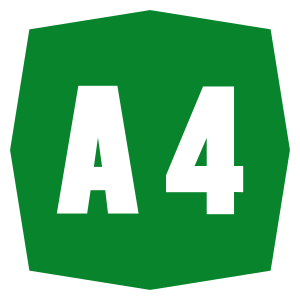
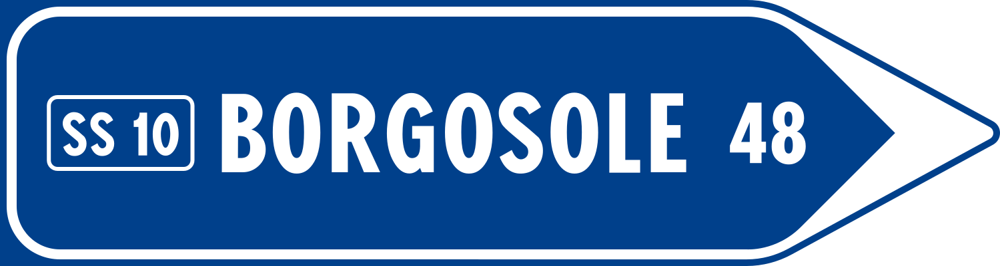
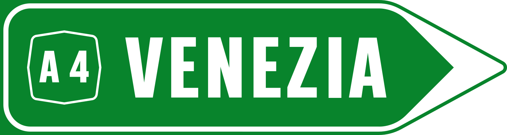
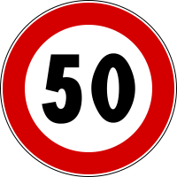
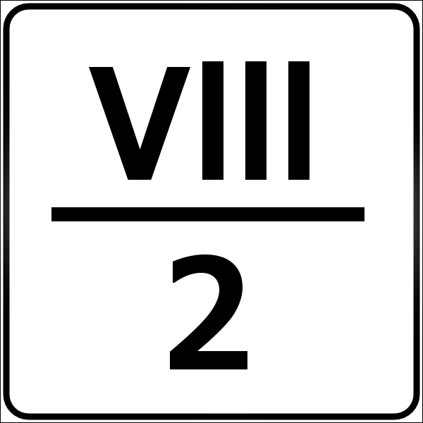
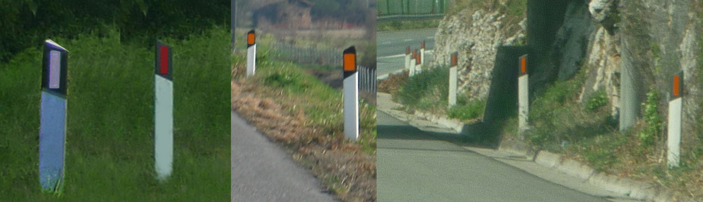
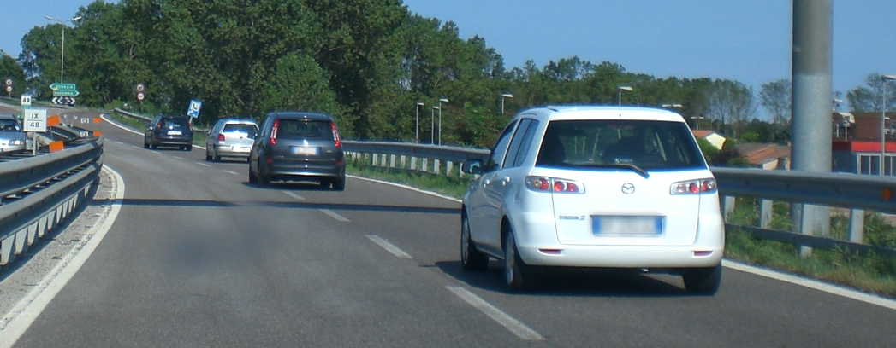

Willtron, CC 表示-継承 3.0, Wikimedia Commonsによる
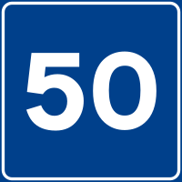
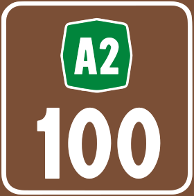
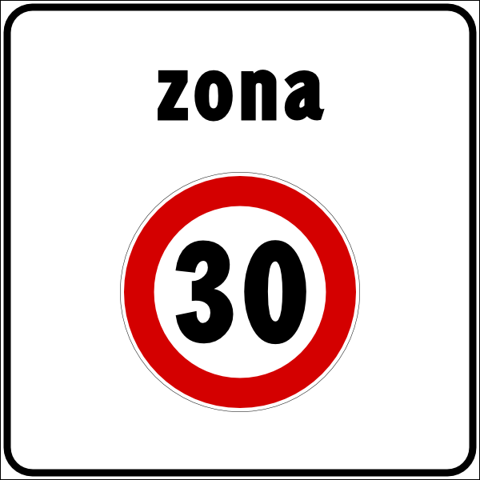
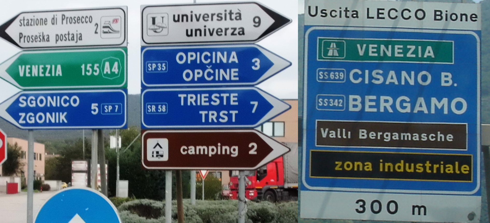
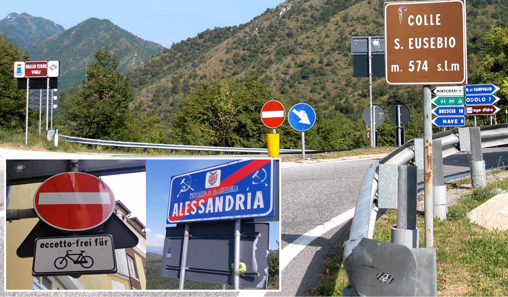
通り名の看板に「Via」と書いてある。白い板に青い線の縁取りがある看板が多く、同じ看板はサンマリノでも見られる。
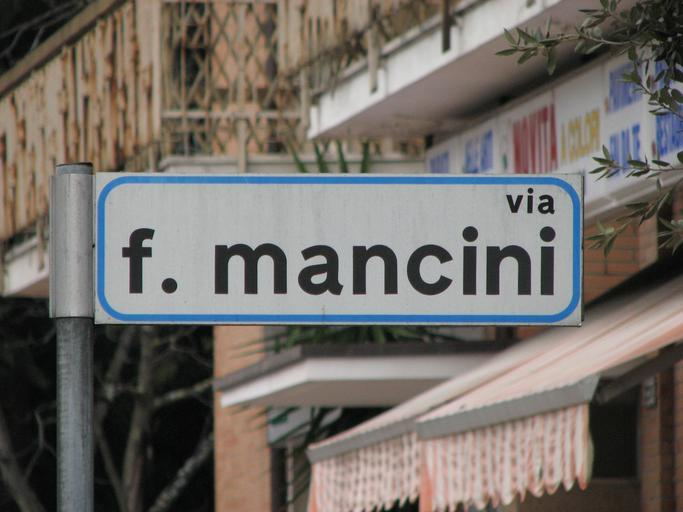

By Arne Hückelheim - Own work, CC BY-SA 3.0, Link
イタリアのタバコや切手の販売店には多くの場合「T」と書かれた看板が付いている(参考文献 イタリア版個人商店？イタリアで良く見かけるTabacchi（タバッキ）とは？)。
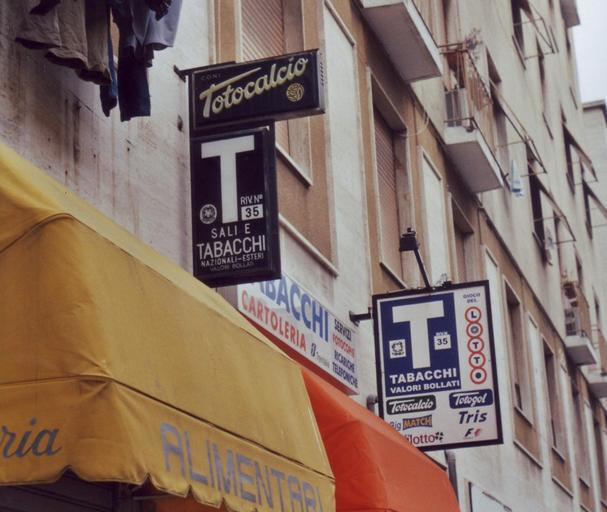
イタリア最大の工業会社のひとつであるEni S.p.A.(参考文献 Eni)の黄色いガソリンスタンドがある。ロゴが良すぎる。
州・地域の絞り込み
- 海沿いは日照時間が長くサボテンが生えている
- 市外局番の先頭の数字でおよその地域が特定できる、北西から南にかけて１～９。
- アンドラのような石壁模様の家やスノーポールが多いなら西部の山岳地帯に行ってみる
- 田んぼやコーン畑があるなら北部かもヨーロッパの農業分布

By Maximilian Dörrbecker (Chumw) - Own work, CC BY-SA 2.5, Link
アンドラのような石壁模様の家が見つかるので国を間違えないように注意。
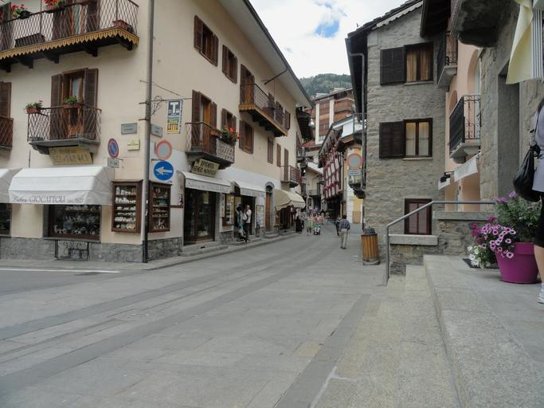
イタリアとドイツって太陽光発電のエリア結構偏っているんですね
— nanja (@nanjakorewa) May 26, 2025
（役に立つ機会すくなそうだけど）https://t.co/vXen0YyStc pic.twitter.com/r9WheqD4J9
細かいデータは参考文献を参照(参考文献 Energy industry in Italy)。
その他
- Province名
- Provinceごとに2文字のコード名があるコード名一覧（英語）
- サルデーニャ州
- たまにサルデーニャ語とイタリア語の２言語表記の看板がある
- イタリアで唯一アウトストラーダが存在しない州なので緑の八角形のマークは無い
- サルデーニャ島だけにあるオレンジ色がハッキリと見えるボラードがある(by Geotips )らしいがよくわからない
- カラブリア州
- シチリア州ではシチリア自治州の州旗を見かけることがある
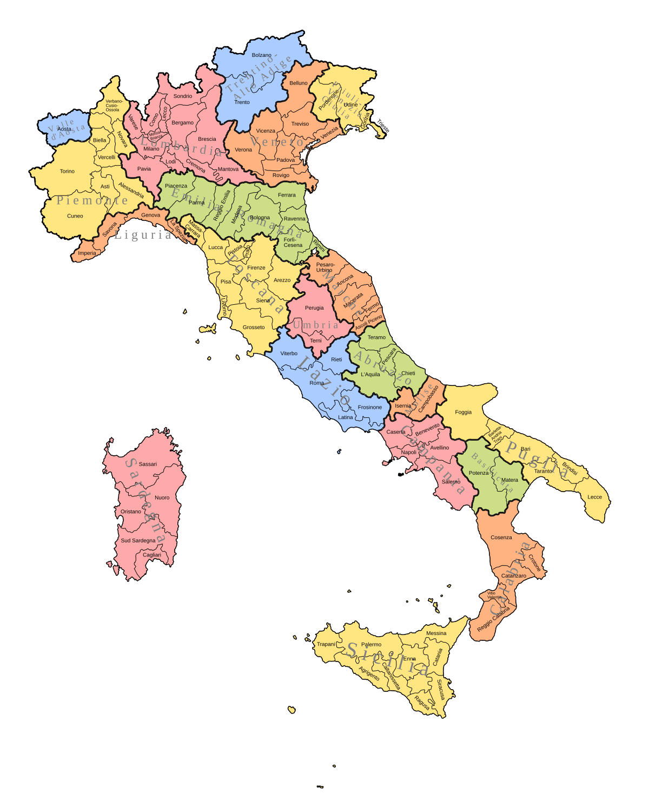
サルデーニャ語との２言語表記の看板が見つかるが頻度は高くない。

アウトストラーダのマーク（８角形の道路番号）がある場合はサルデーニャ島でない可能性が高い。
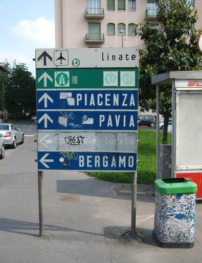
.JPG#/media/File:Monte_Albo_(04).JPG)
By Gianni Careddu - Own work, CC BY-SA 3.0, Link
カラブリア州は観光以外の産業が発達しておらず自然も多い。若者の失業率が50%近くあり、他の州とは経済的な格差が残っている。古い感じの建物も多い(参考文献 カラブリア州)。

都市・町の絞り込み
- ヨーロッパ最大の活火山であるEtna火山があり、とても黒っぽい土が道端に広がっている
- Giglio島は島全体の9割が地中海性森林であり多くマツの林が多く見つかる
- Pantelleria島は黒っぽい石の石垣が多い(参考文献 パンテッレリーア島)
- Egadi諸島にいる時はサンタカテリーナ城が目印になる(参考文献 CASTLE OF SANTA CATERINA FAVIGNANA)
- Lampedusa島は看板やバス停に島名が書いてある
- San domino島は石畳の場所が多くフェリーが泊っている
- Veneziaには船にのって移動するエリアがある
- スイスに囲まれたイタリアの飛び地であるCampione d'Italia町はカメラが低い
ヨーロッパ最大の活火山であるEtna火山があり、とても黒っぽい土が道端に広がっている(参考文献 エトナ火山)。
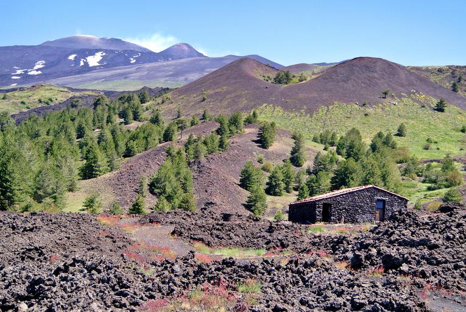
Giglio島は島全体の9割が地中海性森林(参考文献 Isola del Giglio)。マツの木が群生している様子が見受けられる。
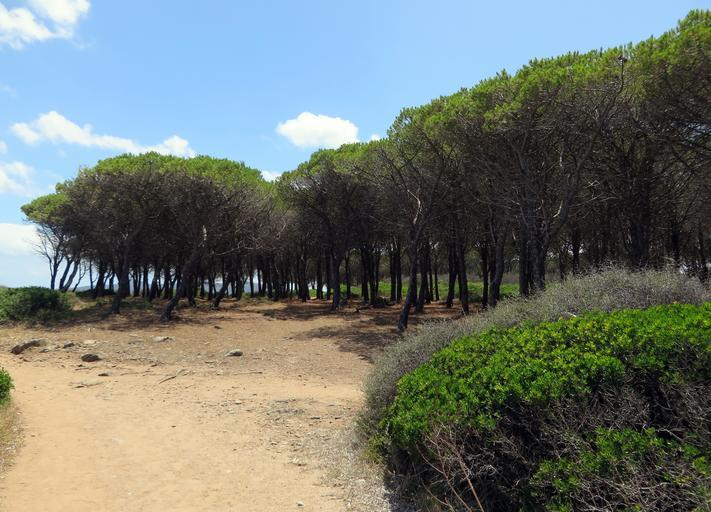

By Giorgio Galeotti - Own work, CC BY 4.0, Link
Veneziaには船にのって移動するエリアがある。ヴェネツィアをモデルにしたフランスのGrimaudと間違えないように。
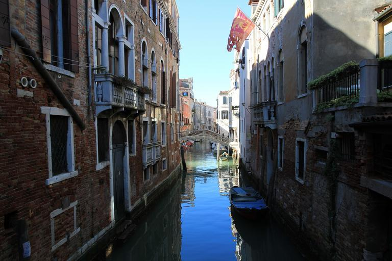
町の通貨はスイス・フランでカメラも低いがナンバーや標識はイタリア。